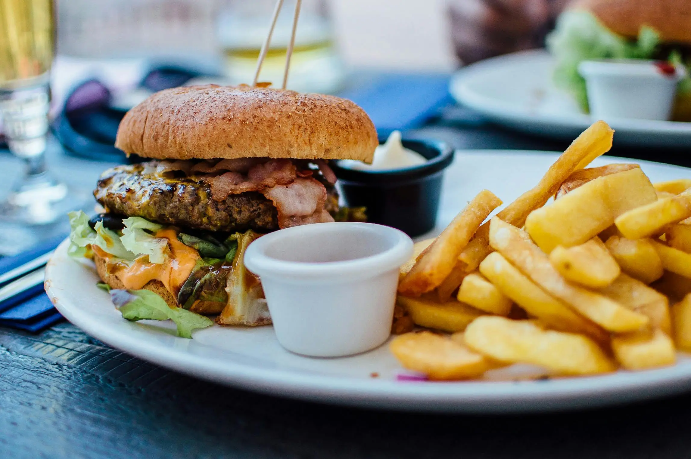

Como perder peso rápidamente según la psicología.
¿Tienes suficiente fuerza de voluntad?
La pérdida de peso no se reduce a algo tan simple como “tener fuerza de voluntad”. El control de la ingesta está regulado por un entramado de factores biológicos, psicológicos, sociales y ambientales. Por eso, las llamadas dietas milagro —que prometen resultados rápidos y espectaculares— suelen acabar en frustración y efecto rebote.
El cuerpo tiende a defender su peso
La teoría del punto fijo sostiene que cada persona tiene un rango de peso que su organismo defiende de forma automática. Cuando perdemos peso con rapidez, el cuerpo reacciona reduciendo el gasto energético y aumentando el hambre, lo que favorece recuperar los kilos perdidos. Este mecanismo explica por qué muchas dietas estrictas no funcionan a largo plazo.
Una visión más actual es la teoría del punto de asentamiento, que plantea que el peso se estabiliza en función de los hábitos y el entorno. Esto significa que cambios sostenidos en la alimentación, la actividad física y el estilo de vida pueden desplazar ese equilibrio de forma gradual y más duradera.
El papel de la mente en el proceso
La psicología tiene varias cosas que decir y analizar en cuanto a como comemos
- Emociones: estrés, ansiedad o tristeza llevan a usar la comida como vía de escape.
- Pensamiento rígido: creencias como “este alimento está prohibido” o “si rompo la dieta ya he fracasado” aumentan la culpa y favorecen los atracones, además de volver el alimento prohibido como algo muchísimo mas deseable.
- Hábitos y aprendizaje: asociar la comida con recompensa o con situaciones sociales refuerza conductas difíciles de cambiar.
- Autocontrol: la restricción excesiva agota la capacidad de autorregulación, lo que termina en episodios de descontrol.
El entorno y la sociedad
Vivimos rodeados de estímulos que favorecen comer de más: raciones cada vez más grandes, disponibilidad constante de ultra procesados, vida sedentaria. A esto se añade la presión cultural hacia la delgadez, que impulsa la búsqueda de soluciones rápidasy fomenta la popularidad de las dietas milagro.
De esta forma, la clave para un cambio duradero se encontraría más en la constancia de mantener pequeños cambios que nos permitan alimentarnos de una manera equilibrada y sana, sin restringir nada, pero con moderación y equilibrio.
El verdadero problema de las dietas milagro
Las dietas milagro se caracterizan por la restricción extrema y las promesas irreales. A corto plazo pueden generar una pérdida de peso rápida, pero a costa de:
- Realentizar el metabolismo, favoreciendo el efecto rebote posteriormente.
- Provocar déficits nutricionales
- Generar una relación negativa con la comida basada en la culpa.
- Aumentar el riesgo de atracones y del ciclo dieta-fracaso.
El resultado suele ser recuperar el peso perdido —e incluso más— junto con frustración y sensación de fracaso personal, cuando en realidad el problema está en el planteamiento de la dieta, no en la persona.
Una visión más realista y saludable
El control del peso no se consigue con atajos, sino con cambios graduales y sostenidos:
- Una alimentación equilibrada y flexible. Como hemos visto, no es necesario prohibir nada, pero conviene moderar, minimizando el consumo de azucares y favoreciendo vitaminas, minerales y proteínas.
- Actividad física regular. No hacen falta maratones, 20 minutos al día de ejercicio físico moderado (como simplemente salir a caminar), resultan mas que suficientes en la mayoría de casos.
- Manejo del estrés y cuidado del descanso. fundamentales para regular la ingesta y cuidar la salud mental.
- Apoyo psicológico para trabajar emociones, pensamientos y hábitos.
En Seliana Psicología Seliana Psicología podemos ayudarte a construir una relación más sana con la comida y contigo mismo. Entender los múltiples factores que influyen en la ingesta es el primer paso para dejar atrás las soluciones mágicas y avanzar hacia un bienestar real y duradero.